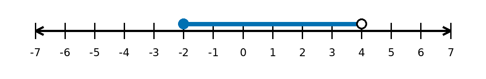
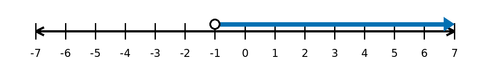

Mathematical idea: Notation is a language for precision. A bracket, parenthesis, endpoint, or arrow can completely change which numbers belong to a set.
In this section, you will learn how to describe solution sets clearly, move between representations, and justify whether endpoints are included or excluded.
Students will represent and interpret sets using interval or inequality notation and graphically on a number line.
I can statements
Later in this section, you will return to the task below. For now, do not solve it. Instead, annotate it individually. Circle anything familiar, underline symbols or directions that seem important, and write notes about what information you think will be needed.
As you annotate, ask yourself: What values are allowed? Which endpoints matter? Should the endpoint be included or excluded? How could words, inequalities, interval notation, and a number line all describe the same set?
Future Task
A community swimming pool allows children to use the deep end only if their height is at least $48$ inches and less than $72$ inches.
Directions
Read the introduction aloud with a partner or in a small group. As you read, annotate the text by marking important ideas, circling key vocabulary, and writing short notes about connections, questions, or predictions in the margins.
Many mathematical answers are not single numbers. Sometimes the answer is a whole set of values: every number greater than $3$, all values from $-2$ to $5$, or all inputs that make sense in a situation. Interval and inequality notation help us describe those sets clearly and efficiently.
Inequality notation uses symbols such as $<$, $\le$, $>$, and $\ge$ to compare a variable to one or more boundary values. Interval notation uses parentheses and brackets to show the same information in a compact form. Parentheses mean an endpoint is not included. Brackets mean an endpoint is included.
Number lines give a visual representation of the same set. Open circles show excluded endpoints, closed circles show included endpoints, and shading shows all values that belong to the set. Arrows show that a set continues forever in one direction.
This kind of notation matters throughout precalculus because it is used to describe solution sets, domain, range, restrictions, and intervals where a function behaves in a certain way. Small notation choices are important because they communicate exactly which values are allowed.
Stop and Discuss
An inequality describes all values that make a statement true. The endpoint is the boundary value, and the inequality symbol tells whether that boundary is included.
Inequality Symbols
Describe each set in words and state whether the endpoint is included.
Describe each set in words and state whether each endpoint is included.
Stop and Discuss
Interval notation gives a compact way to write a set from left to right. The smaller boundary is written first, then the larger boundary.
Endpoint Notation
Translate each inequality into interval notation.
Translate each interval into inequality notation.
Stop and Discuss
A number line shows the same information using endpoints and shading. This visual form is useful because it makes inclusion, exclusion, and direction easy to see.
Visual Meaning
Write the number line in inequality notation and interval notation.

Write the number line in inequality notation and interval notation.

Stop and Discuss
A complete understanding means you can move between words, inequalities, interval notation, and number-line graphs. Each representation should describe exactly the same set.
| Words | Inequality | Interval |
|---|---|---|
| At least $2$ and less than $9$ | $2\le x<9$ | $[2,9)$ |
| Greater than $-5$ but no more than $3$ | $-5<x\le3$ | $(-5,3]$ |
A solution set is described as: all real numbers at least $2$ and less than $9$.
A solution set is described as: all real numbers greater than $-5$ but no more than $3$.
Stop and Discuss
Endpoint decisions must be justified. In pure math, the symbol or bracket tells you whether the endpoint belongs. In context, the situation determines whether a boundary value is allowed.
A student writes $x>-1$ as $[-1,\infty)$. Identify the mistake and write the correct interval notation.
A student writes $[0,7)$ as $0\le x\le7$. Identify the mistake and write the correct inequality notation.
Stop and Discuss
In real situations, endpoints often come from physical limits, rules, or definitions. A value may be excluded because it is impossible, unsafe, unavailable, or outside the meaning of the variable.
Context Question: Does the boundary value itself make sense in the situation?
If yes, include it. If no, exclude it.
A ride requires a height of at least $48$ inches and no more than $78$ inches.
A school club accepts students who have completed more than $10$ service hours but fewer than $40$ service hours.
Use what you learned to revisit the task from the beginning of the notes.
A community swimming pool allows children to use the deep end only if their height is at least $48$ inches and less than $72$ inches.